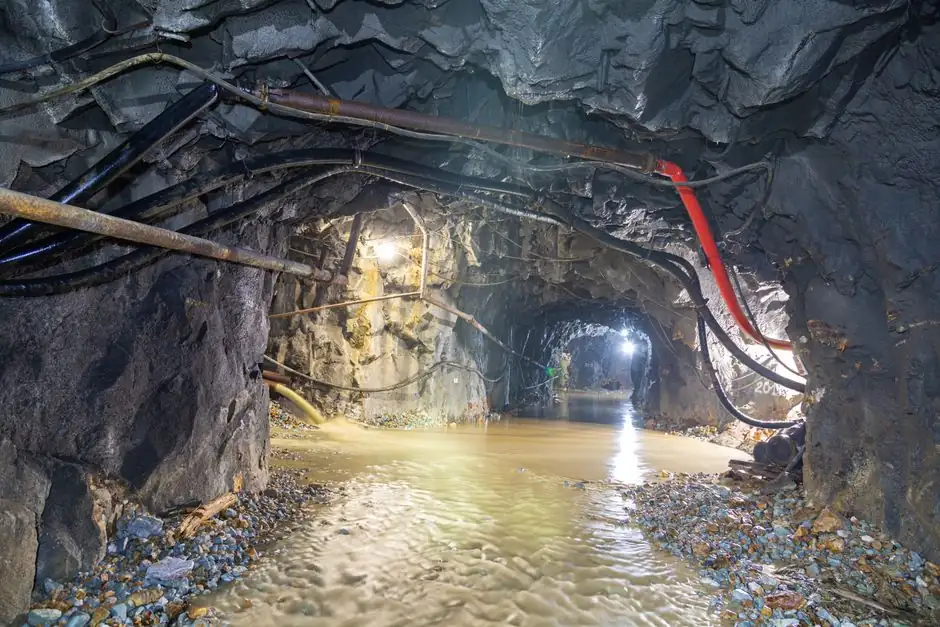

Water extraction services in Jacksonville
Water Extraction Services in Jacksonville is essential for homeowners facing water damage from flooding or leaks. Our Jacksonville water extraction specialists are ready to respond quickly to minimize damage and restore your home.

Service overview
Understanding water extraction services in Jacksonville
Water extraction services involve the removal of excess water from a property to prevent further damage and mold growth. Our team uses advanced equipment, including water extraction pumps and dehumidifiers, to ensure thorough extraction. Water Extraction Services in Jacksonville are critical for homes affected by flooding or severe leaks. Local Jacksonville residents often face unique challenges, such as heavy rains and flooding, that necessitate quick action. With affordable water extraction Jacksonville options, we help homeowners recover from water damage efficiently. If you're searching for 24/7 water extraction Jacksonville services, we are here to assist you promptly.
!
Water leaks causing property damage
If left unaddressed, leaks can lead to significant structural damage and costly repairs.
Flooding from heavy rains
Flooding can overwhelm homes, leading to extensive damage and mold growth if not handled promptly.
Mold growth due to lingering moisture
Mold can pose serious health risks and damage your home's structure if not removed quickly.
Scope of work
What our water extraction services include
Our water extraction services cover a comprehensive range of tasks to ensure your home is safe and dry. We focus on thorough extraction and drying, while additional services may be available as needed.
-
01
Thorough water removal
We utilize powerful water extraction pumps to remove all standing water, ensuring a dry environment.
-
02
Drying and dehumidification
Our team employs dehumidifiers to eliminate residual moisture from the air and surfaces, preventing mold growth.
-
03
Final inspection
After extraction and drying, we perform a final inspection to ensure your home is completely dry and safe.
-
04
Insurance claim assistance
We provide support with insurance claims to help you navigate the process smoothly and efficiently.
Key benefits of our water extraction services
Our water extraction services provide numerous advantages to homeowners dealing with water damage.
Contact us nowTools and methods for effective water extraction
Roto-Rooter water extraction pump
This powerful pump is essential for removing large volumes of water quickly and efficiently.
Dehumidifier
Our dehumidifiers eliminate moisture from the air, ensuring a dry environment to prevent mold growth.
Moisture meter
This device helps us detect hidden moisture in walls and floors, ensuring thorough extraction.
Air scrubber
Air scrubbers improve air quality by filtering out contaminants and odors during the extraction process.
Local execution
In Jacksonville, the humid climate and frequent rain can lead to significant water damage. Our water extraction services are designed to address these local challenges effectively. We understand the building structures common in neighborhoods like San Marco and Riverside, which often require specialized approaches to extraction and drying. Our team is familiar with local codes to ensure compliance and safety. If you're facing water damage, searching for affordable water extraction Jacksonville for homes, we are here to help.
Water extraction services tailored for Jacksonville
- • San Marco
- • Riverside
- • Avondale
- • Southside
Recent work
Available 24/7 in Jacksonville
When emergencies happen, we answer
Our team is on call 24/7 to respond to water damage emergencies. We typically arrive on-site within 30 minutes to assess the situation and begin extraction. Our crew is equipped with all necessary tools to handle any scale of water damage. With a dedicated team ready to assist, you can trust that we will be there when you need us most.
Our water extraction process
Initial assessment
Our team conducts a thorough assessment of the affected areas to determine the extent of water damage. This step is crucial for planning the extraction process.
Water extraction
Using powerful water extraction pumps, we remove standing water from your home. This stage usually takes a few hours, depending on the severity of the flooding.
Drying and dehumidification
After extraction, we deploy dehumidifiers and air scrubbers to eliminate moisture from the air and surfaces. This step is vital to prevent mold growth.
Understanding pricing for water extraction
The cost of our water extraction services varies based on factors like the extent of damage and the size of the area affected. On average, you can expect to pay between $300 and $1,500 for services. Factors such as the type of water (clean, gray, or black), the accessibility of the affected area, and the urgency of the situation can influence the final price. Our affordable water extraction Jacksonville services are designed to provide value without compromising quality.
Trust and proof of our services
Frequently asked questions
How much does water extraction cost in Jacksonville?
The cost of water extraction in Jacksonville varies based on the extent of damage and the area affected. On average, prices range from $300 to $1,500. Factors such as the size of the area and the type of water involved can influence the final cost.
What to do after water damage requiring extraction in Jacksonville?
After experiencing water damage, it's crucial to turn off the water source, if possible, and call a professional for extraction. Avoid walking through standing water and ensure your safety first.
How to choose a water extraction service in Jacksonville?
When selecting a water extraction service, look for certifications, customer reviews, and experience. It's essential to choose a company that offers 24/7 services and has a proven track record.
What are the signs of water damage that need extraction in Jacksonville?
Signs include visible water pooling, dampness in walls or floors, mold growth, and musty odors. If you notice these issues, it's critical to seek emergency water extraction Jacksonville services.
Related services
Water Damage Restoration
Water Damage Restoration encompasses the entire process of restoring a property after water exposure, making it essential following our water extraction services.
Fire Damage Restoration
Fire Damage Restoration services can help restore your home after fire incidents, often requiring water extraction to address the resulting water damage.
Get reliable water extraction services in Jacksonville
Don't let water damage worsen. Contact us today for expert assistance and a free quote.